Tutorial on supervised learning using pmtk3
This page was auto-generated by publishing http://pmtk3.googlecode.com/svn/trunk/docs/tutorial/tutSupervised.m.
We provide a description of the main models and algorithms supported by pmtk for solving supervised learning problems (i.e., univariate conditional density estimation).
Contents
- Models
- Methods
- Creating a model
- Examining the model's parameters
- Using a model for prediction
- Prediction with linear regression
- Prediction with logistic regression
- Visualizing the decision boundaires
- Preprocessing, basis function expansion and kernels
- Overfitting, regularization and MAP estimation
- Discriminant analysis
- Cross validation
Models
The following is a list of pmtk models that are designed for supervised learning (in alphabetical order). We have classified the models based on whether they can be used for classification, regression or both; whether they are generative models of the form  or discriminative models of the form
or discriminative models of the form  ; and whether they are parametric (so
; and whether they are parametric (so  has fixed size) or non-parametric. Note that, in the classification setting, we assume 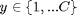, where C is a relatively small number of classes. Structured-output classifiers based on conditional random fields will be discussed later.
has fixed size) or non-parametric. Note that, in the classification setting, we assume 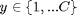, where C is a relatively small number of classes. Structured-output classifiers based on conditional random fields will be discussed later.
| Model | Description | Classif/regr | Gen/Discr | Param/non |
| discrimAnalysis | Discriminant analysis (linear, quadratic, regularized) | Classif | Gen | Param |
| knn | k nearest neighbors | Classif | Gen | Nonparam |
| linreg | Linear regression | Regr | Discrim | Param |
| logreg | Logistic regression | Classif | Discrim | Param |
| mlp | multi-layer perceptron (aka feedforward neural network) | Both | Discrim | Param |
| naiveBayes | Naive Bayes classifier | Classif | Gen | Param |
| svm | Support vector machine | Both | Discrimg | Nonparam |
More models may be added in the future.
Methods
Below we describe the main 'methods' that can be applied to these models. Note that these are just Matlab functions, but we will sometimes call them methods since they behave like object-oriented methods.
Note that not all models support all methods. To find out if a model of type foo supports method bar, just type help fooBar. If you get an error, then you know that foo does not implement bar.
Creating a model
To create a model of type 'foo', use one of the following
model = fooCreate(...) % manually specify parameters model = fooFit(X, y, ...) % Compute ML or MAP estimate of params model = fooFitBayes(X, y, ...) % Compute posterior of params
where
- '...' refers to optional arguments (see below)
- X is an N*D design matrix containing the training data, where N is the number of training cases and D is the number of features.
- y is an N*1 response vector, which can be real-valued (regression), 0/1 or -1/+1 (binary classification), or 1:C (multi-class).
It is straightforward to handle NaNs (missing values) in X when fitting a generative model; however this functionality is not yet supported. NaNs in y correspond to semi-supervised learning, which is not yet supported.
The resulting model is a Matlab structure, rather than an object. However, we will sometimes call it an object, since it behaves like one.
In the case of fooCreate and fooFit, the parameters are point estimates. In the case of fooFitBayes, the parameters are represented as distributions; this is often represented parametrically in terms of the hyper-parameters. The details will be explained below when we look at specific model classes.
As an example, we can fit a linear regression model to the caterpillar data set as follows (using linregBayesCaterpillar):
clear all X = loadData('caterpillar'); % from http://www.ceremade.dauphine.fr/~xian/BCS/caterpillar y = log(X(:,11)); % log number of nests X = X(:,1:10); [model] = linregFit(X, y) % MLE
model =
w0: -0.7870
w: [10x1 double]
lambda: 0
preproc: [1x1 struct]
sigma2: 1.1476
Or we can use Bayesian methods
[modelB] = linregFitBayes(X, y, 'prior', 'uninf') % uninformative Jeffreys prior
modelB =
wN: [11x1 double]
VN: [11x11 double]
aN: 11
bN: 7.5649
preproc: [1x1 struct]
addOnes: 1
Examining the model's parameters
If you fit by the model by ML/MAP estimation, you can examine the parameters by typing model.params, where params is the name of the parameter you are interested in (this varies from model to model, as we saw above).
If you fit the model by Bayesian inference, you can examine summaries of the posterior using
post = fooParamBayes(model)
This computes the marginals of each parameter, and displays the posterior mean, standard deviation and 95% credible interval as a latex table. A simple way to assess if a coefficient is significantly different from 0 is to see if its 95% CI excludes 0 or not. If it does, we can put a little * next to it. For example, here is the output for the linear regression model
linregParamBayes(modelB, 'display', true);
coeff & mean & stddev & 95pc CI & sig w0 & 10.998 & 3.06027 & [4.652, 17.345] & * \\ w1 & -0.004 & 0.00156 & [-0.008, -0.001] & * \\ w2 & -0.054 & 0.02190 & [-0.099, -0.008] & * \\ w3 & 0.068 & 0.09947 & [-0.138, 0.274] & \\ w4 & -1.294 & 0.56381 & [-2.463, -0.124] & * \\ w5 & 0.232 & 0.10438 & [0.015, 0.448] & * \\ w6 & -0.357 & 1.56646 & [-3.605, 2.892] & \\ w7 & -0.237 & 1.00601 & [-2.324, 1.849] & \\ w8 & 0.181 & 0.23672 & [-0.310, 0.672] & \\ w9 & -1.285 & 0.86485 & [-3.079, 0.508] & \\ w10 & -0.433 & 0.73487 & [-1.957, 1.091] & \\
We see that coefficients 0, 1, 2, 4, 5 are "significant" by this measure. (Other methods of testing significance, based on Bayes factors, can also be used, but are a bit more complicated, and one cannot use uninformative priors in such cases.)
It turns out that in this particular example, the Bayesian analysis is identical to a classical frequentist analysis (because the posterior for linear regression under an uninformative Jeffreys prior is equivalent to the sampling distribution of the MLE). To see this, let us use the stats toolbox to fit the model and perform a frequentist analysis:
[w, wint] = regress(y, [ones(size(X,1),1) X]); for i=1:length(w) fprintf('%5.3f, [%5.3f, %5.3f]\n', w(i), wint(i,1), wint(i,2)); end fprintf('\n');
10.998, [4.652, 17.345] -0.004, [-0.008, -0.001] -0.054, [-0.099, -0.008] 0.068, [-0.138, 0.274] -1.294, [-2.463, -0.124] 0.232, [0.015, 0.448] -0.357, [-3.605, 2.892] -0.237, [-2.324, 1.849] 0.181, [-0.310, 0.672] -1.285, [-3.079, 0.508] -0.433, [-1.957, 1.091]
We see that the MLE is the same as the posterior mean, and the 95% confidence interval is the same as the 95% credible interval. (If you don't have the stats toolbox, you can use linregFrequentist instead, which does more or less the same thing.)
In general, a Bayesian and frequentist analysis may not give the same results. In pmtk, all inference is Bayesian.
Using a model for prediction
In machine learning, we usually care more about prediction than in trying to interpret the fitted parameters (especially since many models of interest are hard to interpret or even strictly unidentifiable).
Once the model has been created, you can use it to make predictions as follows
[yhat, py] = fooPredict(model, Xtest) % plugin approximation [yhat, py] = fooPredictBayes(model, Xtest) % posterior predictive
Here yhat is an Ntest*1 vector of predicted responses of the same type as ytrain, where Ntest is the number of rows in Xtest. For regression this is the predicted mean, for classification this is the predicted mode (most probable class label). The meaning of py depends on the model, as follows:
- For regression, py is an Ntest*1 vector of predicted variances.
- For binary classification, py is an Ntest*1 vector of the probability of being in class 1.
- For multi-class, py is an Ntest*C matrix, where py(i,c) = p(y=c|Xtest(i,:),params)
The difference between predict and predictBayes is as follows. predict computes 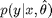, which "plugs in" a point estimate of the parameters, where predictBayes computes 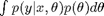 ; this is called the (posterior) predictive density. In practice, the Bayesian approach results in similar (often identical) values for yhat, but quite different values for py. In particular, the uncertainty is reflected more accurately in the Bayesian approach, as we illustrate below.
Prediction with linear regression
As an example, consider fitting a linear regression model to some 1d data using MLE and Bayesian methods (using linregPostPredLinearDemo), and then plotting the predictions on a test set (which is just a grid of point in the interval [-7,7])
setSeed(1); [xtrain, ytrain, xtest] = polyDataMake('sampling', 'sparse', 'deg', 2); fitMethods = {@(x,y) linregFit(x,y), @(x,y) linregFitBayes(x,y)}; predictMethods = {@(x,y) linregPredict(x,y), @(x,y) linregPredictBayes(x,y)}; names = {'MLE', 'Bayes'}; for i=1:length(fitMethods) model = fitMethods{i}(xtrain, ytrain); [mu, v] = predictMethods{i}(model, xtest); figure; hold on plot(xtest, mu, 'k-', 'linewidth', 3, 'displayname', 'prediction'); plot(xtrain,ytrain,'ro','markersize', 14, 'linewidth', 3, ... 'displayname', 'training data'); NN = length(xtest); ndx = 1:5:NN; % plot subset of errorbars to reduce clutter sigma = sqrt(v); legend('location', 'northwest'); errorbar(xtest(ndx), mu(ndx), sigma(ndx)); title(names{i}); end


We see that the main difference is that in the plugin case, the predicted variance is constant, whereas in the Bayesian case, the predicted variance increases as we move further away from the training data.
Prediction with logistic regression
As another example of this, consider fitting a binary logistic regression model to some SAT scores, where the response is whether the student passed or failed the class. First we compute the MLE and use a plugin approximation for prediction, as is standard practice (from logregSATdemo)
close all; clear all stat = loadData('sat'); y = stat(:,1); X = stat(:,4); model = logregFit(X, y); [yhat, prob] = logregPredict(model, X); %ok figure; plot(X, y, 'ko', 'linewidth', 2, 'MarkerSize', 7, 'markerfacecolor', 'k'); hold on plot(X, prob, 'ro', 'linewidth', 2,'MarkerSize', 10)

Now we fit the model using Bayesian inference with an noninformative Gaussian prior. By default, the fitting procedure uses a Laplace approximation to the posterior. To approximate the predictive density, we can plugin in the posterior mean:
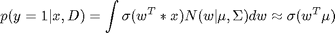
However, this gives essentially the same result as plugging in the MLE. To get a measure of confidence in this prediction, we can sample values of w from their (approximate) posterior, use each such sample to make a prediction, and then compute empirical quantiles of this distribution to get a 95% credible interval. This is done using logregPredictBayes and gives the results shown below (from logregSATdemoBayes)
model = logregFitBayes(X, y); [yhat, prob, pCI] = logregPredictBayes(model, X); figure; plot(X, y, 'ko', 'linewidth', 2, 'MarkerSize', 7, 'markerfacecolor', 'k'); hold on plot(X, prob, 'ro', 'linewidth', 2,'MarkerSize', 10) for i=1:size(X,1) line([X(i,1) X(i,1)], [pCI(i,1) pCI(i,3)]); end

Not all models support Bayesian fitting or prediction (the list will hopefully grow over time, as people add new methods). However, all models provide some measure of confidence on their outputs.
Visualizing the decision boundaires
When comparing classification methods, it is useful to apply them to 2d datasets and to plot the regions of space that get mapped to each class; these are called decision regions, and the boundaries are called decision boundaries. We can do this using the plotDecisionBoundary(X, y, predFn) function, where predFn(X) takes a test matrix and computes the MAP estimate of the labels for each row. As an example of this, consider the famous XOR dataset. Let us try fitting a logistic regression model to it in the original feature space (from logregXorLinearDemo)
close all; clear all; [X, y] = createXORdata(); model = logregFit(X, y); plotDecisionBoundary(X, y, @(X)logregPredict(model, X)); yhat = logregPredict(model, X); errorRate = mean(yhat ~= y) % We see that the method performs at chance level, because the data is not % linearly separable. We give a simple fix to this problem below, when we % discuss basis function expansion.
errorRate =
0.4875
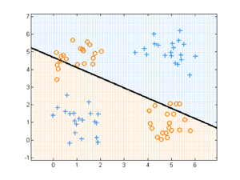 Preprocessing, basis function expansion and kernels
We are free to preprocess the data in any way we choose before fitting the model. In pmtk, you can create a preprocessor (pp) 'object', and then pass it to the fitting function; the pp will be applied to the training data before fitting the model, and will be applied again to the test data. The advantage of this approach is that the pp is stored inside the model, which makes sense, since it is an integral part of the model.
One common form of preprocessing is basis function expansion. This replaces the original features with a larger set, thus permitting us to fit nonlinear models. A popular approach is to use kernel functions, and to define the new feature vector as follows:
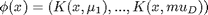
where the 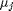 are 'prototypes' and K(x,x') is a 'kernel function', which in this context just means a function of two arguments. A common example is the Gaussian or RBF kernel
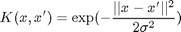
where 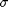 is the 'bandwidth'. Another common example is the polynomial kerne
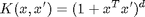
where d is the degree. Often we take the prototypes to be the training vectors, but we don't have to.
Below we show an example where we fit the XOR data using kernelized logistic regression, with various kernels and prototypes.
clear all; close all [X, y] = createXORdata(); rbfScale = 1; polydeg = 2; protoTypes = [1 1; 1 5; 5 1; 5 5]; kernels = {@(X1, X2)kernelRbfSigma(X1, X2, rbfScale) @(X1, X2)kernelRbfSigma(X1, protoTypes, rbfScale) @(X1, X2)kernelPoly(X1, X2, polydeg)}; titles = {'rbf', 'rbf prototypes', 'poly'}; for i=1:numel(kernels) preproc = preprocessorCreate('kernelFn', kernels{i}); model = logregFit(X, y, 'preproc', preproc); yhat = logregPredict(model, X); errorRate = mean(yhat ~= y); fprintf('Error rate using %s features: %2.f%%\n', titles{i}, 100*errorRate); predictFcn = @(Xtest)logregPredict(model, Xtest); plotDecisionBoundary(X, y, predictFcn); if i==2 hold on; plot(protoTypes(:, 1), protoTypes(:, 2), '*k', 'linewidth', 2, 'markersize', 10) end title(titles{i}); end % We discuss how to choose the parameters of the kernel functions below.
Error rate using rbf features: 0% Error rate using rbf prototypes features: 0% Error rate using poly features: 0%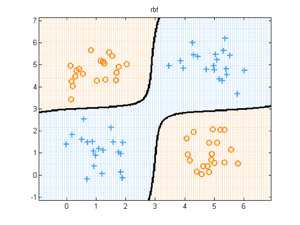 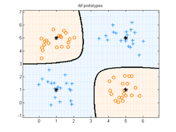 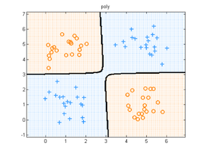
Overfitting, regularization and MAP estimation
Using maximum likelihood to train a model often results in overfitting. This means that the model fits the training set well, but is overly complex and consequently performs poorly on test data. This is easiest to illustrate in the context of polynomial regression in 1d, as shown below (based on linregPolyVsReg)
[xtrain, ytrain, xtest, ytestNoisefree, ytest] = polyDataMake('sampling','thibaux'); deg = 14; Xtrain = xtrain; Xtest = xtest; pp = preprocessorCreate('rescaleX', true, 'poly', deg); model = linregFit(Xtrain, ytrain, 'preproc', pp); [ypredTest] = linregPredict(model, Xtest); figure; scatter(xtrain, ytrain,'b','filled'); hold on; plot(xtest, ypredTest, 'k', 'linewidth', 3);

We see that the fitted function is very 'wiggly', and fits the noise. This is common when we have very little data compared to the number of parameters (in this example, we have N=21 data points, and 15 parameters, since we fit a degree 14 polynomial).
Using Bayesian inference with an uninformative prior does not help, since the mean of the posterior predictive distribution can be obtained by plugging in the posterior mean parameter, which is equal to the MLE:
![$$ E[y|x,D] = E[ E[y|x,w]| D] = E[ x^T w | D] = x^T E[w|D]$$](tutSupervised_eq94705.png)
What we need is an informative prior, that encodes our preference for simpler models. A popular away to achieve this is to use a zero-mean spherical Gaussian prior of the form  , where
, where  is the precision (strength) of the prior. This says that, a priori, we expect the regression weights to be small, which means we believe the function is simple/ smooth (not "too wiggly"). We can compute the posterior of w with this prior using a variety of different models/ likelihood functions. But a computationally simpler approach is to use MAP estimation (aka regularization), which just computes the posterior mode, which is given by
is the precision (strength) of the prior. This says that, a priori, we expect the regression weights to be small, which means we believe the function is simple/ smooth (not "too wiggly"). We can compute the posterior of w with this prior using a variety of different models/ likelihood functions. But a computationally simpler approach is to use MAP estimation (aka regularization), which just computes the posterior mode, which is given by

In the case of a Gaussian likelihood (linear regression) and Gaussian prior, we get

where  is the precision of the measurement noise. If we define
is the precision of the measurement noise. If we define  to be the amount of regularization, we can rewrite this as follows:
to be the amount of regularization, we can rewrite this as follows:

We see that this is a least squares problem with an L2 penalty on the weight vector (this is known as ridge regression). Below we show how to fit this model for several settings of  . We see that increasing results in a smoother fit.
. We see that increasing results in a smoother fit.
lambdas = [0.00001, 0.001]; NL = length(lambdas); for k=1:NL lambda = lambdas(k); model = linregFit(Xtrain, ytrain, 'lambda', lambda, 'preproc', pp, 'regtype', 'L2'); [ypredTest] = linregPredict(model, Xtest); figure; scatter(xtrain, ytrain,'b','filled'); hold on; plot(xtest, ypredTest, 'k', 'linewidth', 3); title(sprintf('lambda %5.3f', log10(lambda))) end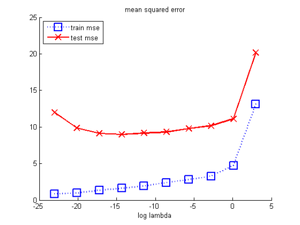 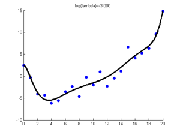
If is too small, the model will overfit (since the function is too wiggly), but if it is too big, the model will underfit (since the function is too smooth). This is illustrated below, where we examine the mean squared error on the training and test sets as a function of . This illustrates the characteristic U-shape on the test set.
lambdas = logspace(-10,1.2,9); NL = length(lambdas); testMse = zeros(1,NL); trainMse = zeros(1,NL); for k=1:NL lambda = lambdas(k); [model] = linregFit(Xtrain, ytrain, 'lambda', lambda, 'preproc', pp); ypredTest = linregPredict(model, Xtest); ypredTrain = linregPredict(model, Xtrain); testMse(k) = mean((ypredTest - ytest).^2); trainMse(k) = mean((ypredTrain - ytrain).^2); end figure; hold on ndx = log(lambdas); % 1:length(lambdas); plot(ndx, trainMse, 'bs:', 'linewidth', 2, 'markersize', 12); plot(ndx, testMse, 'rx-', 'linewidth', 2, 'markersize', 12); legend('train mse', 'test mse', 'location', 'northwest') xlabel('log regularizer')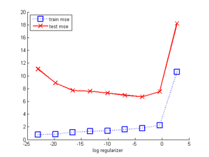
We can apply L2 regularization to logistic regression and neural networks just as easily.
Discriminant analysis
For generative models such as naive Bayes and discriminant analysis, Gaussian priors (corresponding to L2 regularization) are not appropriate (since the parameters do not live in  ); however, analogous regularization techniques can be devised (and are recommended).
); however, analogous regularization techniques can be devised (and are recommended).
For example, when fitting a discriminant analysis model using a shared full covariance, we will encounter numerical problems when N < D. However, we can use a Wishart prior to compute a MAP estimate of 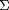. This is called regularized discriminant analysis, and can be fit using discrimAnalysisFit(X, y, 'rda', lambda), where lambda controls the amount of regularization. See cancerHighDimClassifDemo for an example.
Another example is discriminant analysis with a shared diagonal covariance (a special case of naive Bayes). In this case, there are O(D) parameters for the covariance, but O(C D) for the mean. To prevent overfitting, we can shrink the class-conditional means towards the overall mean; this technique is called nearest shrunken centroids. We can fit this model using discrimAnalysisFit(X, y, 'shrunkenCentroids', lambda). We given an example of this below (from shrunkenCentroidsSRBCTdemo), where we apply the method to the SRBCT gene microarray dataset, which has N=144 training examples, D=16063 features and C=4 classes.
loadData('srbct'); Xtest = Xtest(~isnan(ytest), :); ytest = ytest(~isnan(ytest)); fitFn = @(X,y,lam) discrimAnalysisFit(X, y, 'shrunkenCentroids', lam); predictFn = @(model, X) discrimAnalysisPredict(model, X); lambdas = linspace(0, 8, 20); nTrain = length(ytrain); nTest = length(ytest); for i=1:length(lambdas) model = fitFn(Xtrain, ytrain, lambdas(i)); yhatTrain = predictFn(model, Xtrain); yhatTest = predictFn(model, Xtest); errTrain(i) = sum(zeroOneLossFn(yhatTrain, ytrain))/nTrain; errTest(i) = sum(zeroOneLossFn(yhatTest, ytest))/nTest; numgenes(i) = sum(model.shrunkenCentroids(:) ~= 0); end figure; plot(Deltas, errTrain, 'gx-', lambdas, errTest, 'bo--',... 'MarkerSize', 10, 'linewidth', 2) legend('Training', 'Test', 'Location', 'northwest'); xlabel('Amount of shrinkage') ylabel('misclassification rate') title('SRBCT data')
Undefined function or variable 'Deltas'. Error in ==> tutSupervised at 523 plot(Deltas, errTrain, 'gx-', lambdas, errTest, 'bo--',...